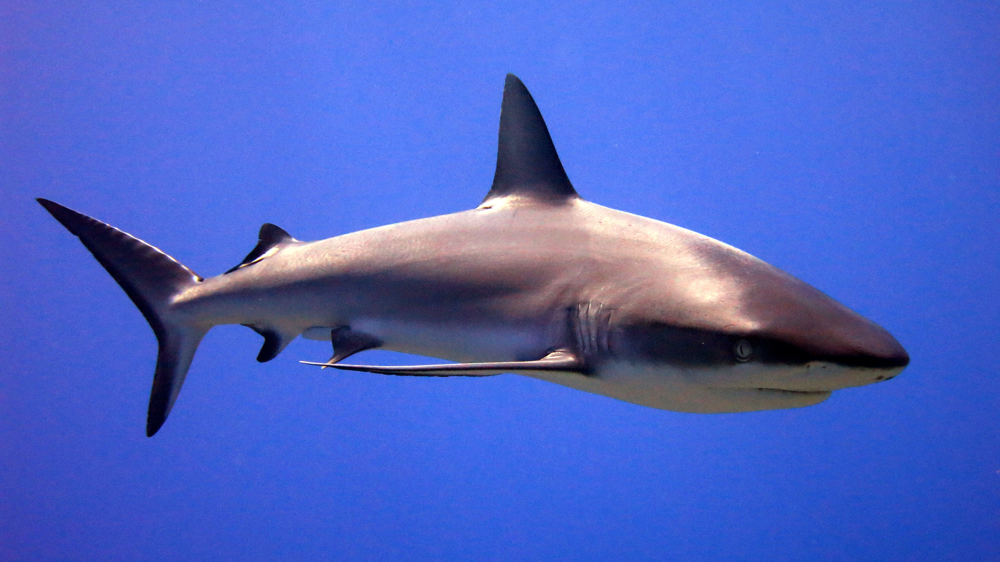

Sharks
Sharks are a group of elasmobranch fish characterized by a cartilaginous skeleton, five to seven gill slits on the sides of the head, and pectoral fins that are not fused to the head.
They are found in all seas and are common to depths of 2,000 meters (6,600 ft). They generally do not live in freshwater, with a few exceptions such as the bull shark and the river shark. Sharks are a critical part of marine ecosystems and are often apex predators in their environments.